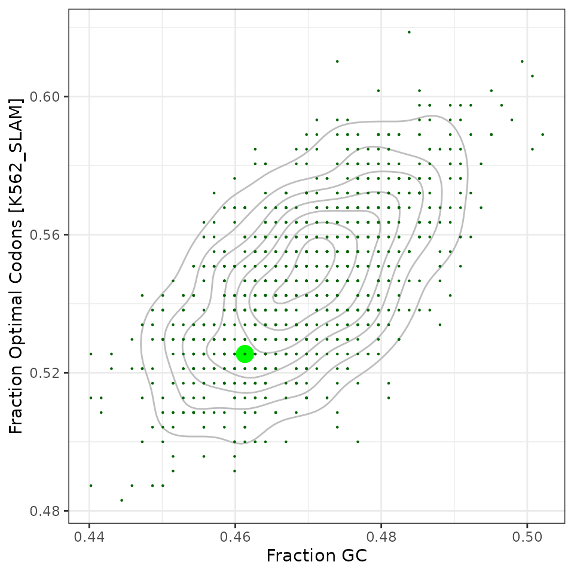
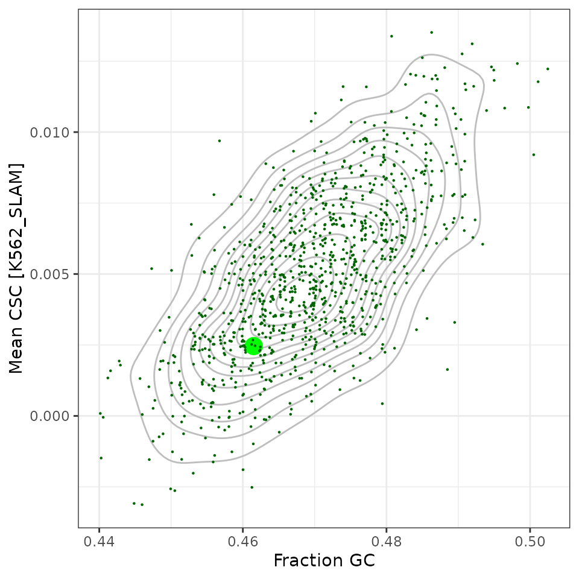
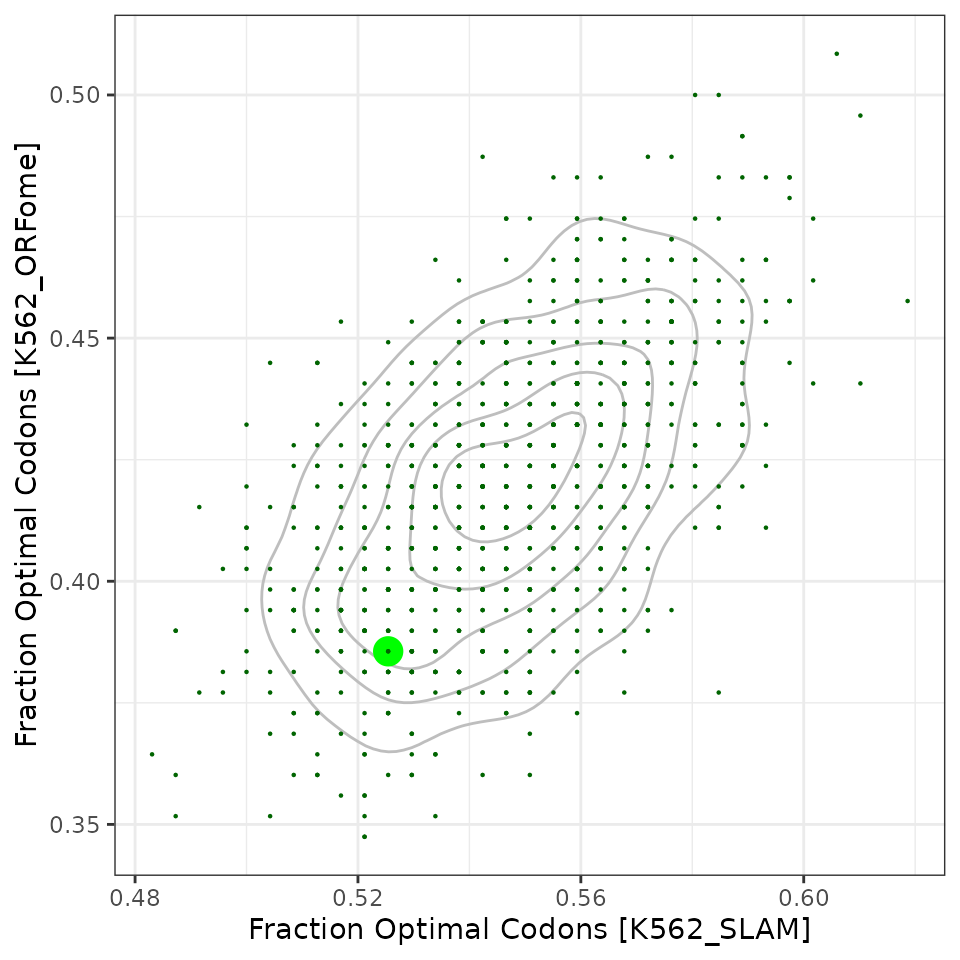
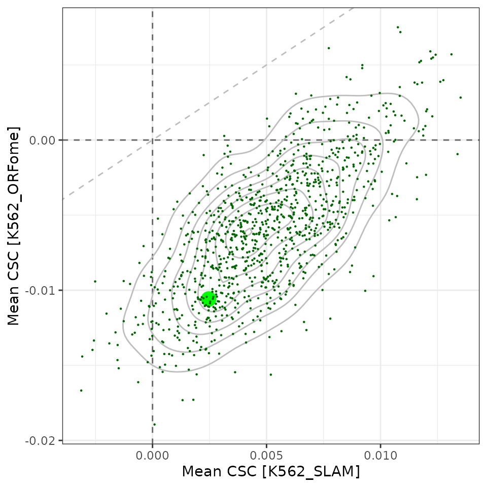

Sampling ORFs of neonGreen
orf_sampling.RmdInitialization
Parameters
set.seed(20230217)
N_SAMPLES=1000
## neonGreen
seq_neonGreen_dna <- DNAString("atggtcagcaaaggcgaagaagacaacatggcatcactgccagcgacacacgaacttcatattttcggctccatcaatggtgtggacttcgatatggttggacagggtactgggaaccctaacgatggatatgaggagttgaacttgaagagtaccaagggcgatcttcagttttcaccttggattctcgtacctcatataggttatggctttcatcaatatctgccctatcctgacggtatgtcacctttccaagcagctatggttgacgggagcggttatcaggttcaccggacaatgcagtttgaagatggagcctctttgaccgtaaattatcggtatacttatgagggcagccatattaaaggcgaggctcaagttaaggggactgggttccccgcggatggtcccgtaatgacaaacagtctgacggctgcagactggtgccgctctaagaagacatatccaaatgacaagacgattattagcactttcaagtggtcatacactacaggaaatggtaaacgctataggagcactgcccggaccacgtatactttcgcgaagccgatggcggcaaattatttgaaaaaccaaccgatgtatgtgttcagaaagacagaactcaagcattctaaaactgaactgaacttcaaagagtggcagaaagcctttactgatgtaatgggcatggacgaactctataagtaa")Generate Samples
df_orfs <- tibble(
seq=c(as.character(seq_neonGreen_dna), runiforf(seq_neonGreen_dna, size=N_SAMPLES)),
type=c("original", rep("sample", N_SAMPLES))) %>%
## compute codon stability scores
mutate(frac_opt=map_dbl(seq, ~ score_fraction_optimal(as_codons(.x))),
mean_csc=map_dbl(seq, ~ score_mean_csc(as_codons(.x))),
frac_opt_orfome=map_dbl(seq, ~ score_fraction_optimal(as_codons(.x), csc_k562_orfome())),
mean_csc_orfome=map_dbl(seq, ~ score_mean_csc(as_codons(.x), csc_k562_orfome())),
frac_gc=letterFrequency(DNAStringSet(seq), "GC")/nchar(seq_neonGreen_dna))Plots
df_orfs %>%
ggplot(aes(x=frac_gc, y=frac_opt)) +
geom_density2d(color="grey") +
geom_point(aes(size=type, color=type), pch=16) +
scale_size_manual(values=c("original"=5, "sample"=0.5), guide=guide_none()) +
scale_color_manual(values=c("original"="green", sample="darkgreen"),
guide=guide_none()) +
labs(x="Fraction GC", y="Fraction Optimal Codons [K562_SLAM]") +
theme_bw()
df_orfs %>%
ggplot(aes(x=frac_gc, y=mean_csc)) +
geom_density2d(color="grey") +
geom_jitter(aes(size=type, color=type), pch=16, width=0.0005, height=0) +
scale_size_manual(values=c("original"=5, "sample"=0.5), guide=guide_none()) +
scale_color_manual(values=c("original"="green", sample="darkgreen"),
guide=guide_none()) +
labs(x="Fraction GC", y="Mean CSC [K562_SLAM]") +
theme_bw()
df_orfs %>%
ggplot(aes(x=frac_opt, y=frac_opt_orfome)) +
geom_density2d(color="grey") +
geom_point(aes(size=type, color=type), pch=16) +
scale_size_manual(values=c("original"=5, "sample"=0.5), guide=guide_none()) +
scale_color_manual(values=c("original"="green", sample="darkgreen"),
guide=guide_none()) +
labs(x="Fraction Optimal Codons [K562_SLAM]",
y="Fraction Optimal Codons [K562_ORFome]") +
theme_bw()
df_orfs %>%
ggplot(aes(x=mean_csc, y=mean_csc_orfome)) +
geom_abline(slope=1, linetype='dashed', color='grey') +
geom_hline(yintercept=0, linetype='dashed', color='grey40') +
geom_vline(xintercept=0, linetype='dashed', color='grey40') +
geom_density2d(color="grey") +
geom_point(aes(size=type, color=type), pch=16) +
scale_size_manual(values=c("original"=5, "sample"=0.5), guide=guide_none()) +
scale_color_manual(values=c("original"="green", sample="darkgreen"),
guide=guide_none()) +
labs(x="Mean CSC [K562_SLAM]",
y="Mean CSC [K562_ORFome]") +
theme_bw()